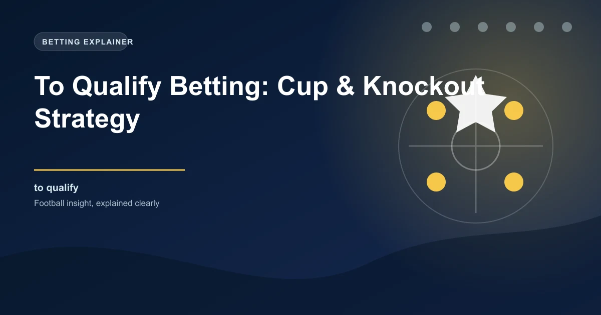

To qualify betting is one of the most strategic markets in football. Unlike match result betting, you're backing a team to progress through a knockout tie regardless of how each individual leg plays out. This market is available for Champions League knockout rounds, FA Cup ties, Europa League matches, and even international tournament qualification.
The beauty of to qualify betting is that it accounts for the full two-legged narrative - including extra time, away goals, and penalties. Understanding these nuances gives you a significant edge over casual bettors who only look at match odds.
The fundamental difference is scope. Match result betting covers only 90 minutes (plus stoppage time). To qualify betting covers the entire tie, including:
| Factor | Match Result (1X2) | To Qualify |
|---|---|---|
| Duration | 90 minutes | Entire tie (180+ mins) |
| Extra time | Not included | Included |
| Penalties | Not included | Included |
| Away goals rule | Not applicable | Critical factor |
| Aggregate score | Not applicable | Decides the winner |
To qualify odds are always shorter than match odds because they cover more scenarios. However, the value lies in identifying when the market overestimates the favourite's chances over 180 minutes.
Two-legged ties follow a specific structure that creates predictable patterns. Understanding the flow of a tie helps identify value at different stages.
Pre-first-leg to qualify odds reflect the market's overall assessment. This is when you get the best odds on the underdog - before any concrete results materialise. Look for:
This is where the sharpest value exists. After the first leg result, to qualify odds adjust - but often not accurately. Key factors to assess:
Champions League Round of 16: Real Madrid vs Liverpool
Pre-first leg odds: Real Madrid to qualify @ 1.72, Liverpool @ 2.10
First leg result: Liverpool 2-1 Real Madrid (at Anfield)
Post-first leg odds: Real Madrid @ 2.50, Liverpool @ 1.53
Analysis: Real Madrid got a crucial away goal. At the Bernabeu, they need only 1-0 to advance. Despite trailing, their odds of 2.50 offer value - the market overreacted to the result without accounting for the away goal advantage.
Historical data shows clear patterns in how first leg results affect qualification rates. This table shows the percentage of teams that advanced from each first leg result scenario in Champions League knockout rounds:
| First Leg Result (Home team first) | Home Team Qualify % | Away Team Qualify % |
|---|---|---|
| 1-0 | 74% | 26% |
| 2-0 | 91% | 9% |
| 2-1 | 68% | 32% |
| 0-0 | 56% | 44% |
| 1-1 | 52% | 48% |
| 0-1 | 24% | 76% |
| 0-2 | 9% | 91% |
| 1-2 | 30% | 70% |
| 2-2 | 42% | 58% |
In UEFA competitions, away goals traditionally act as the first tiebreaker. A 0-0 draw at home is much worse than a 1-1 draw at home, because the away goal conceded gives the opponent an advantage. Always check the specific competition rules - some competitions have abolished away goals in recent years.
The home advantage in knockout football is amplified compared to league matches. The intensity of a packed stadium in a do-or-die scenario can lift teams significantly.
Teams playing the second leg at home have a well-documented advantage. They know exactly what result they need, can manage the game state, and the crowd provides a psychological boost. Historical data shows:
Some teams consistently outperform their expected odds in knockout competitions:
League form going into a knockout tie matters, but not as much as most bettors assume. The key factors are:
| Factor | Impact on Knockout Performance | Weight in Model |
|---|---|---|
| Recent league form (last 5) | Moderate - confidence matters | 20% |
| Head-to-head record | Strong - psychological factor | 30% |
| Knockout experience | Very strong - composure under pressure | 30% |
| Injury list / squad depth | Strong - two legs test depth | 20% |
| League position / priorities | Moderate - motivation factor | 10% |
Penalties decide approximately 15-20% of knockout ties that go to extra time. Understanding which teams have an edge from the spot can swing to qualify probabilities significantly.
If a Champions League knockout match goes to penalties, the team with:
This should shift to qualify odds by 5-10% if penalties are considered likely.
These two markets are often confused but serve very different purposes:
| Aspect | To Qualify | Outright Winner (Tournament) |
|---|---|---|
| Scope | Single tie / round | Entire tournament |
| Duration | Days to weeks | Months |
| Variance | Lower | Much higher |
| Analysis complexity | Manageable (one opponent) | Complex (all possible opponents) |
| Bankroll suitability | Core strategy | Small fun bets |
| Information edge | Easier to find | Harder to sustain |
The most liquid to qualify market. Best for: two-legged ties where form analysis and away goals create value. Avoid group stage (match result is more appropriate). Focus on Round of 16 onwards.
Less liquid but more mispricing. Best for: identifying strong teams from weaker leagues who are undervalued, or betting against overrated big-club B teams.
Single-leg ties create different dynamics. Best for: giant-killing opportunities, home advantage analysis, and teams prioritising the cup over league survival.
Single-leg knockout matches with massive home/away neutrality. Best for: penalty shootout analysis, historical knockout pedigree, and form analysis from group stages.
To qualify means betting on a team to advance to the next round of a knockout competition, covering all 180+ minutes, extra time, and penalties if needed.
To qualify odds are shorter (lower) than match odds because they cover more scenarios. However, they offer better value when you consider the full tie context.
Away goals are the first tiebreaker after aggregate score. Scoring away gives a massive advantage - a 2-2 draw away is effectively a winning result as two away goals put immense pressure on the opponent.
To qualify bets include extra time and penalties. If the match goes to extra time, your bet remains active until a team qualifies.
Yes, live to qualify betting is available. In-play odds adjust dramatically after goals, red cards, and at half-time in each leg.
To qualify covers one specific tie. To win the tournament covers the entire competition. To qualify has lower variance and is easier to analyse.
Europa League and Conference League offer the most mispricing. Champions League is the most efficiently priced but still has value opportunities.
Treat each leg of a tie as a separate betting event. Stake 1-3% per bet, with higher stakes only when you have a clear edge in the between-legs period.
Yes. Teams like Real Madrid (Champions League), Sevilla (Europa League), and Chelsea (FA Cup) consistently outperform expectations in their preferred competitions.
A 0-0 draw gives the home team a 56% chance of qualifying. A 1-1 draw is almost 50-50. A 2-2 draw favours the away team (58% qualify). Always note exact scorelines, not just win/loss/draw.
Apply these knockout strategies to today's cup matches:
Generate optimized accumulator combinations from today's AI-powered predictions. Set your target odds and get instant ticket suggestions.
Free Ticket Builder →